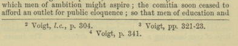

Check Footnote Coding 2
Search for multiple footnotes in the same paragraph and separate them.
To save space, Encyclopedia Britannica would sometimes print two footnotes on the same line. And OCR faithfully reproduces those combinations, but Python expects them to be in separate paragraphs and returns an error in these cases. So we run a small regex to find and correct the problem before running Python

-
Make sure the Regular expression and Dot
matches all options are selected and click Find
All.
Figure 2: Find/Replace in Files window.